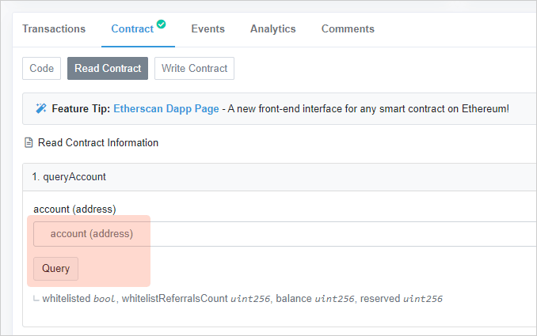
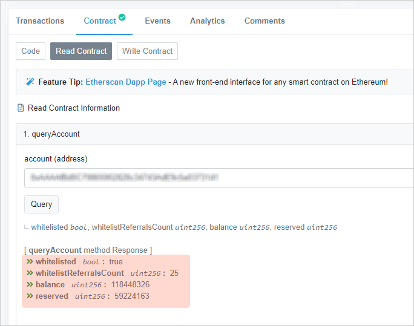

How to query Stoken data¶


{kind=link}
Contract address is 0x37C7e57f28f1c481Ffa354f5B21F159f8c51782b
Deployed at Tx Hash 0xd88541481a39c1…
Block height #6495749
Open-sourced under the GNU General Public License v3.0
Here is the link for Read the Contract:
https://etherscan.io/address/0x37C7e57f28f1c481Ffa354f5B21F159f8c51782b#readContract
Click here, then Contract => Read Contract
Stoken summary¶
Function #2: stoken2
{kind=link}
Note
- totalSupply
Total supply of Stoken, with 6 decimals.
1000000000means 1,000,000,000.000 Stoken total.- whitelistCounter
The counter for whitelisted addresses, with no decimals.
6918means there are 6,918 addresses are already whitelisted.- whitelistingMode
Whether the whitelist signing-up is allowed.
Truefor YES, andFalsefor NO.When it shows
Trueyou can follow How to join the whitelist to join.- safeMode
Whether the SAFE-MODE is on.
Truefor YES, andFalsefor NO.When it shows
True, transfers from a non-whitelisted address is restricted. This is a mechanism to protect early ecological health.- burningMode
Whether the BURNING-MODE is on.
Truefor YES, andFalsefor NO.When it shows
True, 1% will be burned for every transaction of Stoken.- burningPermill
When BURNING-MODE is on, the value is valid. It is the burning ratio in per-mill.
10means the current burning ratio is 1%.
Query an address in Stoken¶
Function #1: queryAccount
{kind=link}
Enter an ETH wallet address, and press Query, then:
{kind=link}
Let’s focus on the returned values:
whitelisted bool : true
whitelistReferralsCount uint256 : 25
balance uint256 : 118448326
reserved uint256 : 59224163
Note
- whitelisted
If it returns
true, means the address is already whitelisted,falsemeans no.- whitelistReferralsCount
The quantity of direct referrals.
- balance
Balance of Stoken, with 6 decimals.
118448326means 118.448326 Stoken.- reserved
Reserved balance of Stoken, with 6 decimals.
59224163means 59.224163 Stoken.